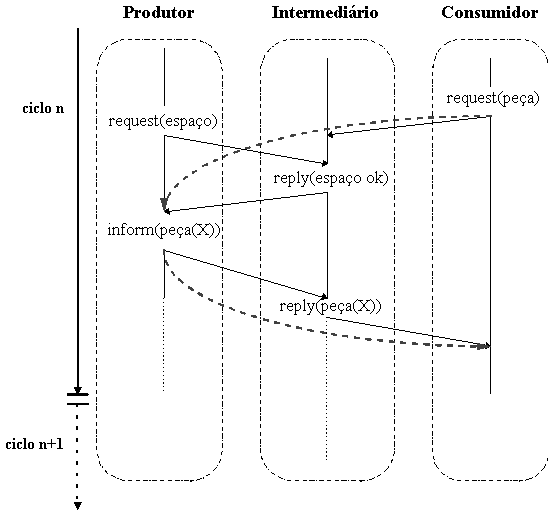

Jomi Fred Hübner
Universidade Regional de Blumenau
e-mail: jomi@furb.blusoft.softex.br
Antônio Carlos da Rocha Costa
Universidade Federal do Rio Grande do Sul
e-mail: rocha@inf.ufrgs.br
Rafael Heitor Bordini
University College London
e-mail:R.Bordini@cs.ucl.ac.uk
Resumo
Este artigo apresenta um estudo sobre um problema comum na entrada de um novo agente em sociedades abertas (no caso, a sociedade Produtor-Consumidor), i.e., como este agente será integrado na sociedade a fim de colaborar com seu funcionamento. Para isto, o novo agente deve conhecer os outros, quais seus papéis, como se comportam, etc. O trabalho apresenta uma abordagens de identificação de papéis onde os agentes envolvidos utilizam-se de um protocolo de apresentação.
Abstract
This paper concerns the study of new agent entrance in the open society (the producer-consumer society), i.e., how this agent will be integrated in the society for collaborating to its functioning. For this, the new agent must know the others, what are their roles, how they behave, etc. The work explain one approach to identify an agent role, that is, by a presentation protocol.
Palavras-chave
Inteligência Artificial, Inteligência Artificial Distribuída, Sistemas MultiAgentes, Migração de Agentes, Identificação de Papéis, Aprendizado em Sistemas MultiAgentes, Problema Produtor-Consumidor
Este artigo é desenvolvido no âmbito da Inteligência Artificial Distribuída (IAD), mais especificamente, um ramo da IAD, Sistemas Multi-Agentes (SMA) [GAS 88, DEM 90]. Os SMA se opõe às abordagens da IA clássica, que tem como metáfora o comportamento humano individual, colocando como metáfora o comportamento social, com os sistemas computacionais sendo vistos como sociedades de agentes inteligentes e autônomos. Os SMA trazem uma série de novas perspectivas para a computação pois considera sistemas:
A fim de atingir estas metas, é necessário sanar alguns problemas [GAS 88, SIC 92], a saber:
Uma característica importante para sistemas de IAD é tornar a sociedade aberta à entrada dinâmica de agentes. Com esta característica, que em [COS 94] é chamada de migração de agentes (pois inclui tanto a entrada como a saída), estes sistemas tornam-se mais flexíveis, passando a solucionar problemas anteriormente não solucionáveis.
Uma migração se dá ou porque um agente necessita de alguma função social que não existe na sua sociedade atual e existe na sociedade que pretende entrar ou porque a sociedade precisa de um agente com determinada capacidade, e este somente está disponível em outra sociedade.
No processo de migração nas sociedades abertas, são identificadas as seguintes etapas pelas quais passam os agentes (da entrada à saída) e suas respectivas necessidades:
A capacidade de aceitar novos agentes e perder agentes também coloca novos problemas às sociedades. Tais problemas podem ser classificados em dois níveis, o nível social e o nível do agente. No nível social, o maior problema é manter a integridade funcional da sociedade depois da migração.
O problema principal que a sociedade deve resolver quando um agente entra ou sai dela é manter sua integridade funcional. Quer dizer, a sociedade deve assegurar-se que depois da migração do agente ela continue funcionando tão bem (ou melhor que) estava funcionando antes da migração. A sociedade da qual sai um agente deve ter capacidade para encontrar entre os agentes que permaneceram algum que possa tornar-se responsável pelas funções que o agente que saiu era responsável. ([COS94, p. 537], tradução do autor)
Para o agente que está migrando, são identificados dois tipos de problemas adaptativos: de linguagem e interação, que concerne ao uso de expressões usadas e a maneira como as interações são organizadas na nova sociedade; e, problemas de conhecimento e atuação, que se referem a como um agente irá se comportar a fim de realizar justamente aquilo que a sociedade espera dele.
Este trabalho se atem aos problemas de conhecimento e atuação. Para que os agentes da sociedade possam cooperar e coordenar suas ações, é necessário que tenham conhecimento das capacidades, habilidades, desejos e planos dos outros agentes. Grande parte do conhecimento a respeito dos outros pode ser extraído dos papéis que estes podem assumir na sociedade. Assim sendo, o problema colocado é como os agentes da sociedade que recebeu o agente imigrante e o próprio agente imigrante conhecerão/aprenderão os papéis uns dos outros. Resolvendo este problema, os problemas de conhecimento e atuação na migração de agentes são também resolvidos.
Berthet, Demazeau e Boissier [BER 92] colocam que a identificação do papel de um outro agente pode ser feita de duas formas: (i) diretamente, através de uma requisição explícita aos agentes; ou (ii) indiretamente, inferindo o papel a partir dos atos de comunicação dos agentes. Neste trabalho será descrito um mecanismo direto de identificação de papéis, onde é proposto um protocolo de apresentação (seção 2). Em [HÜB 95] são apresentadas duas abordagens para uma identificação indireta de papéis; uma que observa o agente e tenta construir uma especificação desta observação a fim de compara-la com especificações prévias (estereótipos) de papéis e outra que observa o agente procurando inferir-lhe o plano, ao qual há um papel associado.
A fim de validar os mecanismos propostos foram feitos testes numa sociedade hipotética, a sociedade de produtores e consumidores (seção 3).
No mecanismo por apresentação, o agente interessado em saber o papel de um outro lhe faz uma pergunta. A apresentação exige dos agentes envolvidos
Em sociedades não abertas, estas exigências são facilmente satisfeitas, por esta razão, o mecanismo de apresentação é o mais utilizado neste tipo de sociedades. Em sociedades abertas, a segunda exigência pode ser difícil de ser satisfeita, principalmente quando considerada a migração de agentes entre sociedades com histórias diferentes e, portanto, com boa chance de terem identificações diferentes para papéis semelhantes. Por exemplo, em uma sociedade o papel de consumidor pode ser identificado por "Consumidor" e em outra por "Receptor", no caso, ambas identificam papéis por palavras, o que, em si, é também uma restrição. Para contornar esta exigência, primeiro, os agentes devem ter consciência de que podem ter descrições diferentes; segundo, devem adotar uma representação comum para os papéis, ou um deles deve aprender a forma de descrição do outro. Estas soluções não serão abordadas no presente trabalho por exigirem protocolos de negociação referentes aos aspectos de linguagem e interação (cf. [BOR 94]).
A terceira exigência pressupõe que o agente tenha um papel pre-determinado, independente da função que está tendo num dado momento, ou que ele tenha capacidade de avaliar constantemente qual o papel que está assumindo.
A fim de que os agentes possam saber quais regras regem a "conversa" de apresentação, a definição de um protocolo de apresentação torna-se necessária. Genericamente, um protocolo é identificado por um nome, um estado inicial e uma seqüência de transições de estados. Diante disso, propõe-se uma linguagem de descrição de protocolos (LDP) com a seguinte sintaxe:
<protocolo> ::= protocol <id>; {id do protocolo}
<dcl_agentes>
<estado_pro> {estado inicial}
<transições>.
<id> ::= {definição tradicional de identificador}
<dcl_agentes>::= <dcl_agente> <dcl_agentes> |
<dcl_agente> |
<dcl_agente> ::= <agente> : <tipo_ag> ;
<tipo_ag> ::= <id>
<transições> ::= <transição> <transições> |
<transição>
<transição> ::= <mensagem> <estado_pro>
<estado_pro> ::= (<estado_agente>,<estado_agente>) |
(<estado_agente>,<estado_agente>) |
(<estado_agente>,<estado_agente>)
<mensagem> ::= <tipo_mem>(<conteúdo>)
<tipo_mem> ::= request | inform | reply
<conteúdo> ::= {definido conforme um termo de Prolog}
<estado_agente> ::= <agente> <estados> |
<agente>
<agente> ::= {definido conforme uma variável de Prolog}
<estados> ::= . <id> <estados> |
. <id>
A declaração dos agentes, <dcl_agentes>, determina quais os papéis que cada agente irá assumir no decorrer do protocolo. Se o papel do agente não fosse essencial, o tipo pode ser "Agente".
Um estado do protocolo, <estado_pro>, é um par, onde cada parte representa o estado de um dos agentes envolvidos na comunicação. O estado do protocolo pode ter uma das seguintes instâncias: quando o primeiro agente do par toma a iniciativa na próxima transição (caso em que o primeiro argumento está sublinhado); quando o segundo agente toma a iniciativa (segundo argumento é sublinhado); ou quando não há próxima transição (nenhum dos argumentos é sublinhado), isto só acontece no estado final do protocolo.
Um estado de agente, <estado_agente>, é descrito por uma variável, representando o agente, e por uma seqüência de estados (separados por ponto), indicando os estados pelos quais o agente passou antes da próxima transição.
Transições ocorrem devido a mensagens que alteram o estado atual do protocolo. Cada mensagem tem um tipo e um conteúdo. Como em [GAS91b], os tipos de mensagem podem ser request (requer que o receptor da mensagem envie uma resposta à solicitação), reply (a mensagem de resposta a uma solicitação) e Inform (mensagem que informa algo a outro agente sem necessitar de resposta).
Por exemplo, a transição
(X.i,Y.q) request(Algo) (X.j,Y.r)
indica que o agente X, no estado i, enviou a mensagem "request(Algo)" ao agente Y, que estava no estado q, passando assim a estarem nos estados j e r, respectivamente.
Definida a linguagem de descrição de protocolos, podemos definir o protocolo que controla a apresentação, como segue:
protocol presentation;
X:Agent;
Y:Agent;
(X.init,Y.wait) request(role)
(X.wait,Y.send) reply (role(R))
(X,Y).
Se um agente deseja saber o papel de outro, assume o comportamento X. Se lhe é solicitado o papel, assume o comportamento Y.
A sociedade de Produtores e Consumidores é composta principalmente por agentes que assumem justamente estes dois papéis. Resumidamente, Produtores produzem peças e Consumidores as consomem (cf. [COS93b] para uma descrição funcional desta sociedade). Para que esta sociedade funcione de maneira eficiente, introduz-se o papel de Intermediário que recebe as peças dos Produtores, guarda-as, e quando uma delas for requisitada, envia-a para um Consumidor. Não obstante esta simplicidade aparente, a sociedade PIC (Produtor-Intermediário-Consumidor) apresenta algumas situações mais complicadas, como por exemplo: "o que acontece quando um Produtor envia uma peça ao Intermediário e não existe espaço para ela?", ou "quando um Consumidor solicita uma peça ao Intermediário e este não pode enviá-la (por falta no estoque)?" [TAN 92]. Além destes problemas, é notória a necessidade dos agentes se conhecerem nesta sociedade, como fica exemplificado no caso de Produtores que precisam conhecer os agentes que assumem papel de Intermediários para poder enviar-lhes suas peças.
A fim de descrever detalhadamente a sociedade PIC, os protocolos de comunicação utilizados são apresentados para descrever o comportamento padrão dos agentes. Deve-se observar que o modo de funcionamento "normal" aqui especificado para os agentes a fim de experimentar os mecanismos propostos não é único.
Os protocolos de comunicação serão descritos conforme a linguagem de descrição de protocolos apresentada na seção 2.1. A interação entre Consumidores e Intermediários é descrita no seguinte protocolo:
protocol consumidor-intermediário;
C: Consumidor;
I: Intermediário;
(C.init,I.wait) request(peça) ->
(C.wait,I.send) reply(peça(X)) ->
(C.init,I.wait).
Um Consumidor, inicialmente no estado init, pede (através da mensagem request(peça)) a algum Intermediário previamente conhecido por algum mecanismo de identificação de papel para enviar-lhe uma peça, e fica então esperando o envio da peça. Quando a peça chega (por meio da mensagem reply(peça(X))), ela é consumida e o agente volta ao estado inicial.
O agente Intermediário quando recebe um pedido de peça assume um dos seguintes comportamentos: se existir peça no estoque, retira a peça e envia-a ao Consumidor; se não existirem peças em estoque, coloca o Consumidor numa lista de espera e assim que receber uma peça será enviada ao primeiro agente desta lista.
O protocolo de interação Produtor-Intermediário pode se realizar de duas maneiras, conforme descrito nos protocolos abaixo.
protocol produtor-intermediário(1);
P: Produtor;
I: Intermediário;
(P.init,I.wait) request(espaço) ->
((P.wait,I.send) reply(espaço nok) ->
(P.init,I.wait))
or
((P.wait,I.send) reply(espaço ok) ->
(P.send,I.wait) inform(peça(X)) ->
(P.init,I.wait)).
protocol produtor-intermediário(2);
P: Produtor;
I: Intermediário;
(P.init.send,I.wait) inform(peça(X)) ->
(P.init,I.wait).
O comportamento do Produtor para o primeiro protocolo inicia com a produção de uma peça seguido de pedido a algum Intermediário por espaço para a colocação da mesma, utilizando para isso a mensagem "request(espaço)". O Intermediário pode responder de duas formas: "reply(espaço ok)" ou "reply(espaço nok)", significando que o espaço foi reservado ou que não há espaço, respectivamente. Caso haja espaço, o Produtor envia a peça por meio da mensagem "inform(peça(X))", onde X é o número da peça produzida. Quando o Intermediário recebe esta mensagem, coloca a peça no estoque. No caso de não haver espaço para a peça, o Produtor pede espaço a outro Intermediário. Os Produtores que optam pelo segundo protocolo simplesmente enviam as peças aos Intermediários, sem antes pedir espaço.
O Intermediário, na interação com o Produtor, tem o seguinte comportamento: ao receber um pedido de espaço e tendo verificado a possibilidade deste no estoque (ou seja, estoque atual + reservas capacidade máxima) efetua a reserva para o Produtor e responde confirmando. Caso não haja espaço, o Produtor é avisado. Quando o Intermediário recebe a mensagem "inform(peça(X))" de um Produtor, esta peça é colocada no estoque, o número de reservas é diminuído, e, se existe algum Consumidor na lista de espera, manda-lhe a peça.
Da união dos dois protocolos apresentados acima, pode-se derivar o protocolo geral da sociedade PIC que liga os Produtores aos Consumidores (cf. figura 1, onde o protocolo geral está representado por setas pontilhadas que não consideram o Intermediário).
protocol produtor-consumidor;
C: Consumidor;
P: Produtor;
(C.init,P.wait) request(peça) ->
(C.wait,P.send) inform(peça(X)) ->
(C.init,P.wait).

Figura 1: Protocolo geral da sociedade PIC
Como pode ser observado na figura 1, o papel de Produtor é relativo a um único papel, o de Intermediário. O mesmo acontece com o papel de Consumidor, que também é relativo ao papel de Intermediário. Já o papel de Intermediário é relativo a dois papéis, o de Produtor e o de Consumidor, simultaneamente.
A implementação da sociedade PIC, para fins de validação e teste do mecanismo proposto, foi feita na bancada de simulação de sociedades de agentes desenvolvida por Luiz Muniz [MON 93] para ambiente MacProlog do Macintosh.A bancada permite a definição de agentes (quanto aos aspectos de controle, unidades, módulos, métodos e estados internos) e coloca estes agentes em funcionamento (simulando uma execução simultânea de todos eles).
Na simulação realizada para a sociedade PIC, o mecanismo de apresentação é utilizado principalmente pelos agentes "natos", aqueles que estão ativos deste o início da simulação. Assim, antes de um Produtor iniciar seu funcionamento normal, ele utiliza o protocolo de apresentação para identificar o papel de Intermediário em algum agente. Uma vez identificado pelo menos um agente Intermediário, o Produtor pode iniciar a produção da primeira peça. O mesmo vale para os Consumidores. Como os Intermediários não tomam iniciativa nas comunicações, não passam pelo processo de descobrir os papéis dos agentes com quem se comunicam. A princípio, apenas se comportam conforme as regras dos protocolos de comunicação (se recebeu determinada mensagem responde com a mensagem ditada no protocolo sem verificar o papel do outro agente).
Na seguinte simulação, feita no protótipo implementado, participam dois agentes Produtor (Rocha e Rosa), uma agente Intermediária (Renata), um agente Consumidor (Jomi). As linhas da simulação apresentam a seguinte forma:
<Nome do agente> <Tipo de agente> <Mensagem>
onde <Tipo de agente> segue a correspondência:
+++ Produtor
:::: Consumidor
.... Intermediário
O mecanismo de identificação de papéis por apresentação é muito eficiente, ou seja, para um agente descobrir o papel de outro basta enviar-lhe uma mensagem e esperar a resposta. Todavia, as exigências feitas por este mecanismo podem ser muito fortes, principalmente quando se tratar de uma sociedade aberta. Desta forma, é o mecanismo mais indicado para ambientes onde os agentes tem mesma estrutura, ou seja, certamente conhecem o protocolo de apresentação e tem mesmos identificadores de papel.
Para sociedades abertas convém estudar melhor os mecanismo de identificação indiretos (por observação) onde as exigências estruturais são menores.
[BER 92] BERTHET, Sabine, DEMAZEAU, Yves, BOISSIER, Oliver. Knowing Each Other Better. In: 11st International Workshop on Distributed Artificial Intelligence. Glen Arbor, 1992. p. 1-20.
[BOR 94] BORDINI, Rafael Heitor. Suporte Lingüístico para Migração de Agentes. Porto Alegre, II/UFRGS, 1994. 128p. (Dissertação de Mestrado).
[COS93a] COSTA, Antônio Carlos da Rocha. Inteligência de Máquina: Esboço de uma Abordagem Construtivista. Porto Alegre, UFRGS, 1993. 168p. (Tese de Doutorado).
[COS93b] COSTA, Antônio Carlos da Rocha, CASTILHO, José Mauro Volkmer de, CLÁUDIO, Dalcídio Moraes. Functional Processes and Functional Roles in Societies of Computing Agents. In: X Simpósio Brasileiro de Inteligência Artificial. Anais... Porto Alegre: UFRGS, 1993. p. 267ss.
[COS 94] COSTA, Antônio Carlos da Rocha; HÜBNER, Jomi Fred; BORDINI, Rafael Heitor. On Entering an Open Society. In: XI Simpósio Brasileiro de Inteligência Artificial. Anais... Fortaleza: SBC, p. 535546, 1994.
[DEM 90] DEMAZEAU, Yves, MÜLLER, Jean Pierre. Decentralized Artificial Intelligence. In: Decentralized Artificial Intelligence - 1. Organização: DEMAZEAU, Yves, MÜLLER Jean-Pierre. North-Holland, Elsevier Science Publishers, 1990. p. 3ss.
[GAS 88] GASSER, Les. Distribution and Coordination of Tasks Among Intelligent Agents. In: Proceedings of the JCAI'88. Scandinavian Conference on AI. Amsterdam, Springfield, 1988.
[HÜB 94] HÜBNER, Jomi Fred. Estudo da Entrada de Agentes na Sociedade Produtor-Consumidor. Porto Alegre: CPGCC/UFRGS, 1994. (Trabalho Individual I, n. 392).
[HUB 95] HÜBNER, Jomi Fred. Migração de Agentes em Sistemas Multi-Agentes Abertos. Porto Alegre, UFRGS, 1995. 124p. (Dissertação de Mestado).
[MON 93] MONIZ, Luis Manuel Ferreira Fernandes. SSAA: Sistema para Simulação de Agentes e Ambientes. Universidade Técnica de Lisboa, junho, 1993. Dissertação de Mestrado.
[SIC 92] SICHMAN, Jaime Simão, DEMAZEAU, Yves, BOISSIER, Oliver. When can knowledge-based sytems be called agents? In: IX Simpósio Brasileiro de Inteligência Artificial. Anais... Rio de Janeiro: SBC, 1992.
[TAN 92] TANENBAUM, Andrew S. Modern Operating Systems. Amsterdam: Prentice Hall, 1992.
[WER 87] WERNER, Eric. Cooperating Agents: a Unifield Theory of Comunication and Social Structure. In: The International Stance. Edited by Daniel C. Dennet. Cambridge, The MIT Press, 1987.